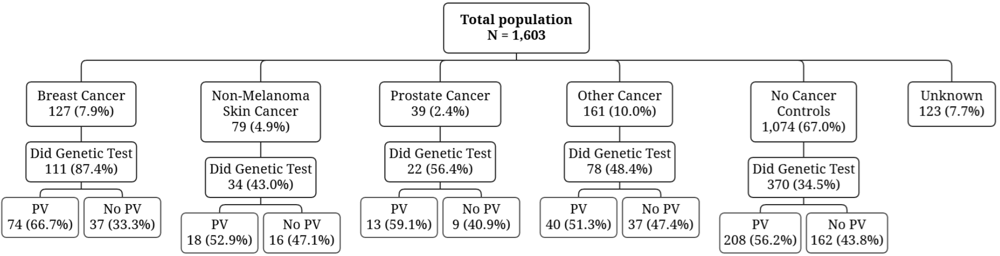
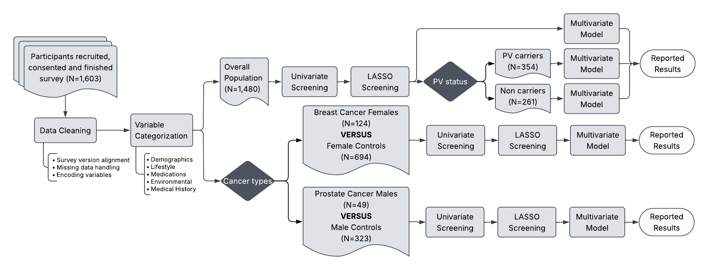

eGene Study
Overview
The eGene Study is a participant-reported cohort designed to explore whether modifiable exposures and clinical history are associated with cancer risk in people with and without pathogenic variants. The central question is whether these associations differ by genetic background, especially in individuals already at elevated hereditary risk.
In the main analysis, the study evaluated demographic, reproductive, medication, lifestyle, medical history, and environmental variables, then tested their association with overall cancer risk and selected cancer subgroups.
Study Population
Participants were recruited across the United States through the Eureka digital research platform between 2020 and 2025.

Geographic distribution of eGene Study participants across the United States.
Cohort Composition
The study included 1,603 participants. Cancer cases were categorized by cancer type, and participants with available genetic testing results were further stratified according to pathogenic variant status.

Distribution of cancer types and pathogenic variant status within the eGene Study cohort.
Study Design
This study used a cross-sectional survey design to examine how behavioral, environmental, medication, and medical history factors are associated with cancer risk in a hereditary-cancer-enriched cohort.
Recruitment
Participants were recruited through the Eureka digital research platform between 2020 and 2025 using EHR outreach, email campaigns, newsletters, and clinic-based recruitment.
Questionnaire
Participants completed a structured 216-item survey covering demographics, reproductive factors, medication use, lifestyle, medical history, and environmental exposures.
Analysis
Survey versions were harmonized, free-text responses were categorized, and logistic regression with LASSO-based feature selection was used for overall and subgroup analyses.

Figure 1. Study workflow and analytical strategy for the eGene Study.
Research Insights
Cancer risk was associated with a diverse set of behavioral, environmental, and clinical factors, highlighting the multifactorial nature of cancer susceptibility.
Associations between exposures and cancer risk varied across different genetic backgrounds, suggesting that inherited susceptibility may influence how risk factors relate to disease development.
Distinct association patterns emerged across breast and prostate cancer analyses, indicating that risk profiles may differ between cancer types.
The study supports integrating genetic information with modifiable exposures to improve future cancer risk stratification and personalized prevention strategies.
My Contribution
Your author contribution section makes this easy to showcase: you led investigation, methodology, formal analysis, data curation, visualization, and drafting/revision of the manuscript. This is worth highlighting prominently on the project page.
Limitations
- Self-reported exposures and outcomes may introduce recall bias.
- Non-random participation may limit generalizability.
- Missing genetic testing results reduce coverage of PV status.
- Some subgroup estimates are imprecise because of small sample sizes.
These points align with the limitations discussed in the manuscript.
Next Steps
Future work can extend this project with larger cohorts, prospective follow-up, and more objective exposure measurement. That would make the page feel complete while leaving room for the eventual manuscript PDF or conference poster.